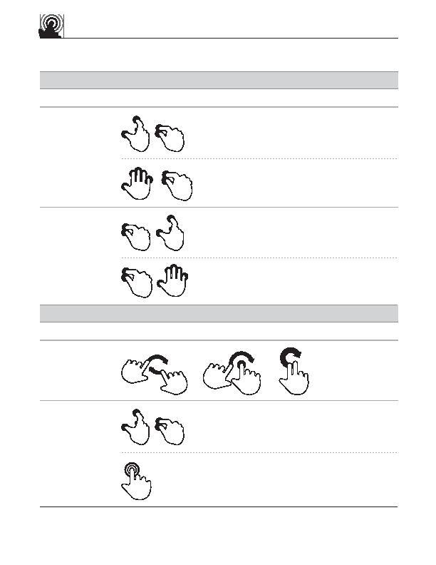

touch gesture
reference guide
pinch
Scale down
squeeze
Scale up
u
Supporting materials for this guide can be found online:
http://www.lukew.com/touch/
user action
gesture
description
OBJECT-RELATED ACTIONS (continued)
Touch surface with two fingers and
bring them closer together
Touch surface with five fingers and
bring them closer together
spread
Touch surface with two fingers and
move them apart
splay
Touch surface with five fingers and
move them apart
Adjust view
(rotate)
pinch
Adjust view
(zoom in)
double tap
gesture
description
user action
NAVIGATING ACTIONS
Touch surface with two fingers and
bring them closer together
Rapidly touch surface twice with fingertip
rotate
OR
OR